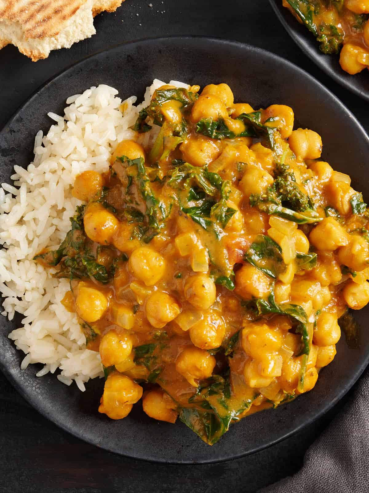

Easy Chickpea Coconut Curry

A delicious and savory meal made in under 45 minutes! Can easily be customized to suit individual tastes. Try substituting or adding more vegetables, like shredded carrots or thin-sliced red bell pepper! We love it over basmati rice, but it's great on potatoes and pasta, as well!
Main Course (Vegan)
Ingredients
- 1 tablespoon coconut oil
- 1 large red onion, thinnly sliced
- 3 cloves garlic, minced
- 1 tablespoon ginger, grated
- 1 tbsp garam masala
- ¼ tsp ground turmeric
- ¼ tsp ground black pepper
- ¼ tsp cayenne pepper (or to taste)
- ¼ tsp salt (plus more to taste)
- 1½ cups diced tomatoes (equal to 1 14-oz. can, drained)
- 1¾ cups chickpeas, rinsed (equal to 1 16-oz. can, drained)
- 1½ cups full-fat coconut milk (equal to 1 14-oz. can)
- 2 tbsp freshly-squeezed lime juice (or lemon)
- Chopped fresh cilantro for garnish
Instructions
- In a large pan, heat the coconut oil over medium-high heat. Add the red onion with a pinch of salt. Cook, stirring frequently, until the onion is softened and starting to brown.
- Reduce the heat to medium. Add the garlic and ginger; stir and cook for 60 seconds or until fragrant. Stir in the garam masala, turmeric, black pepper, cayenne pepper, and salt. Cook for 30 seconds more to toast the spices.
- Add the tomatoes to the pan and stir well. Continue to cook, stirring occasionally, for about 3-5 minutes or until the tomatoes are starting to break down and dry up a little bit. Stir in the coconut milk and chickpeas. Bring the mixture to a boil, then reduce the heat to medium-low.
- Simmer the coconut chickpea curry for about 10 minutes or until reduced slightly. Stir in the fresh lime juice. Season to taste with additional salt (I used about another 1/2 teaspoon at this point). Serve hot, over rice or other accompaniments of choice, and garnished with chopped fresh cilantro.